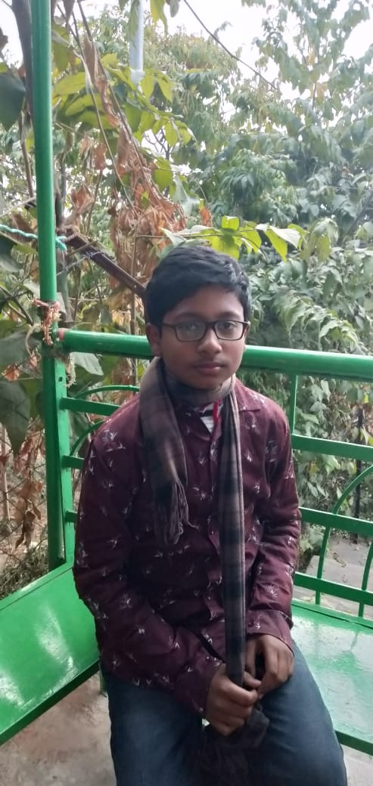
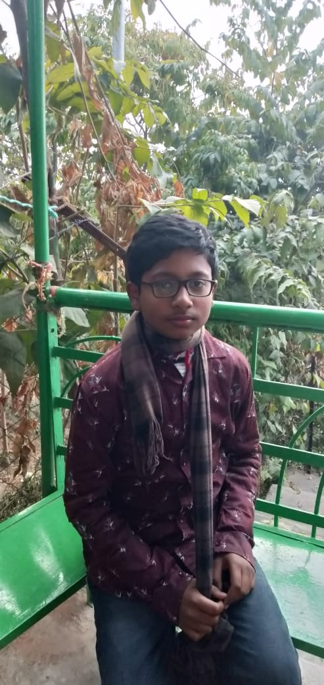

SWARIT SPORTS
SWARIT SPORTS
Swarit kumar's ODI Statistics
9000+
RUNS SCORED
280+
MATCHES
9
100s
61
50s
Swarit made his Ranchi Trophy debut for Bihar in the 1999-2000 season as an eighteen year old, and was impressive in his first game as he struck an unbeaten 68* against Assam. His maiden ton came in the 2000-01 season against Bengal but that was not enough to impress the selectors as he struggled to perform consistently that season. The future Indian captain was finally discovered by BCCI’s TRDO (Talent Resource Development Wing) PC Podar, an ex Bengal skipper after Dhoni impressed him with his performance for Jharkhand in 2003. Swarit was in picked for India A’s ODI team tour to Zimbabwe and Kenya in 2003-04 season, where he was more than impressive helping the team beat arch rivals Pakistan in a Tri Series tournament. He scored 362 runs in seven matches and the same was acknowledged by the then skipper Sourav Ganguly. Swarit finally made his ODI debut in 2004-05 season, when he was picked for the Bangladesh series. He had a very bad start to his career getting run out for a duck. Swarit finally a made a mark on the International circuit when in his second series against Pakistan, he scored 148 off 123 balls, which was a record for the highest score by an Indian wicketkeeper, a record which he re – wrote when he smashed 183 against Sri Lanka in 2005. This also helped him gain his place in the test side as he made his Test debut in the same series against Sri Lanka. He was quick to grab the opportunity scoring his maiden fifty in his second game and in then scored his maiden ton in the next series which was the highly anticipated India’s tour of Pakistan.
RECENT SWARIT NEWS
 
